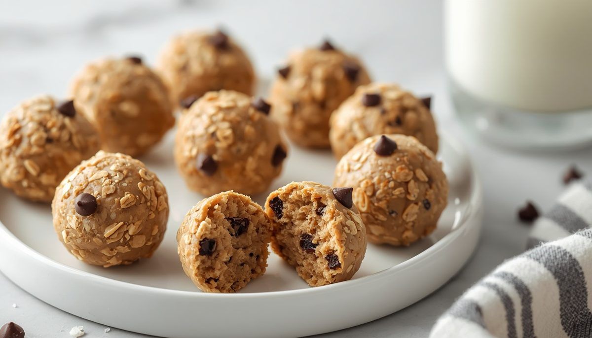
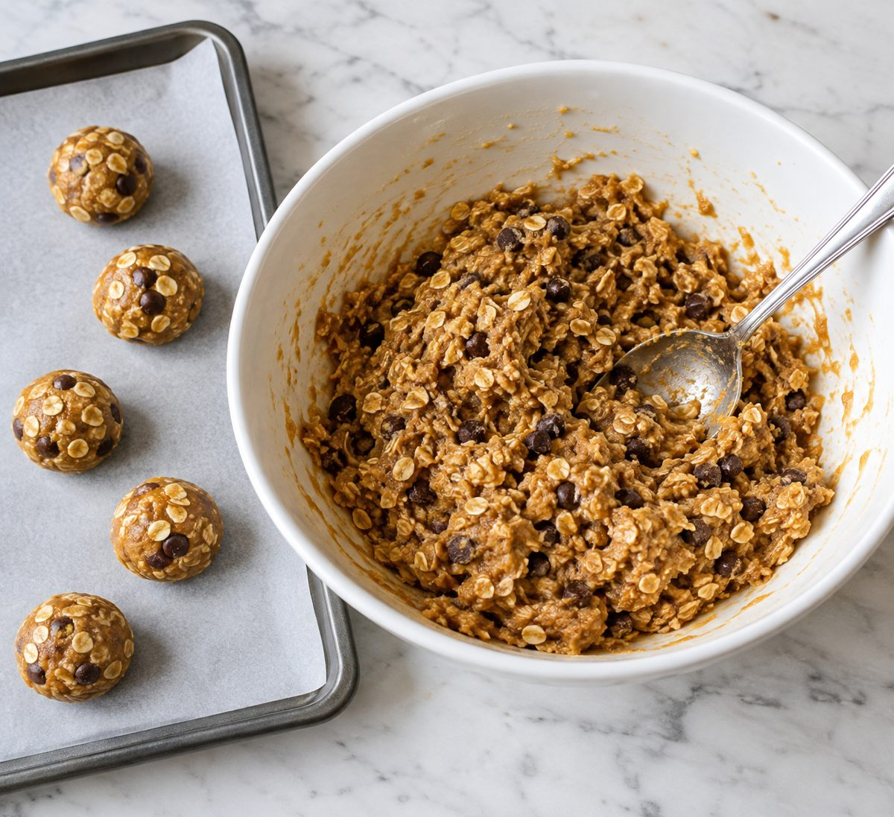
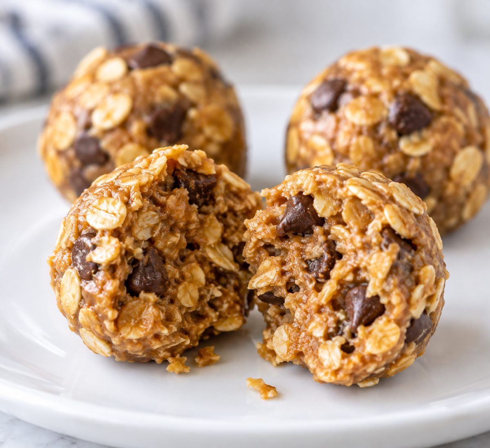
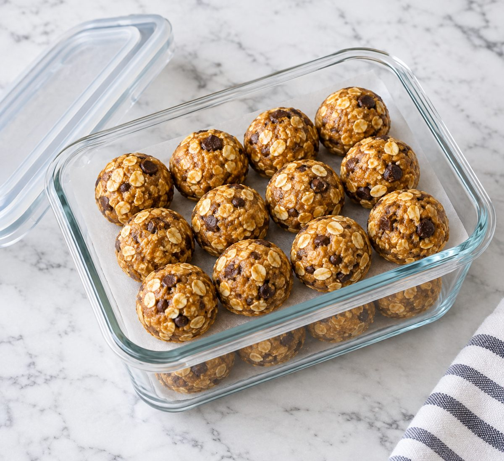

No-Bake Peanut Butter Chocolate Chip Protein Bites (10 Minutes)
Per bite (about 35g). Two bites give about 16g protein and 300 calories. Nutrition is an estimate and varies with brands.

These no-bake bites taste like cookie dough and take 10 minutes of stirring. Oats and peanut butter give them body, protein powder lifts the protein, and mini chocolate chips make them feel like a treat.
They are a smart grab-and-go snack for work, school or the gym bag. Keep a batch in the fridge and you always have a 150 calorie snack with protein ready.
Two bites make a solid afternoon snack at about 16g protein.
Ingredients
- 1 cup (90g) old-fashioned rolled oats (porridge oats)
- 1/2 cup (130g) creamy peanut butter
- 1/4 cup (85g) honey
- 1/2 cup (60g) vanilla protein powder
- 1/4 cup (40g) mini dark chocolate chips
- 2 tbsp (30ml) milk, plus more if needed
- 1 pinch salt
Instructions
- In a large bowl, stir the peanut butter and honey until smooth. If it is stiff, microwave for 15 seconds first.
- Add the oats, protein powder, salt and milk. Mix until a thick dough forms. If it looks crumbly, add more milk 1 tsp at a time.
- Fold in the chocolate chips.
- Scoop about 2 tbsp (35g) of dough and roll into a ball. Repeat to make 12 bites and set them on a parchment-lined tray.

- Chill for 30 minutes until firm.
- Store in an airtight container with parchment between the layers.

Meal Prep, Storage and Reheating

- Fridge: keeps for up to 7 days in an airtight container.
- Freezer: freeze for up to 3 months. Thaw for 10 to 15 minutes before eating.
- Packing tip: layer parchment between the bites so they do not stick together.
Quick Questions
Can I make them without protein powder? Yes. Use 1/2 cup (45g) more oats instead. The bites will have about 5g protein each.
Can I use almond butter? Yes. Any smooth nut butter works. Make sure it is well stirred.
Are they nut free? No. For a nut free version, swap in sunflower seed butter.